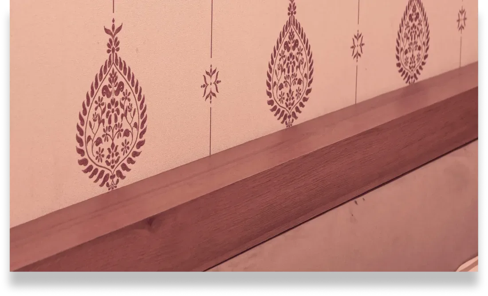
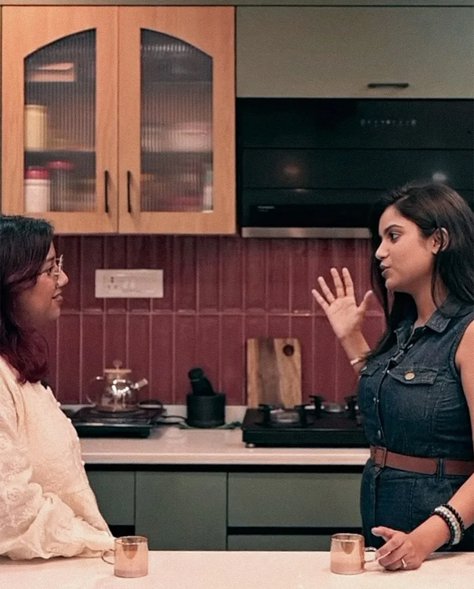
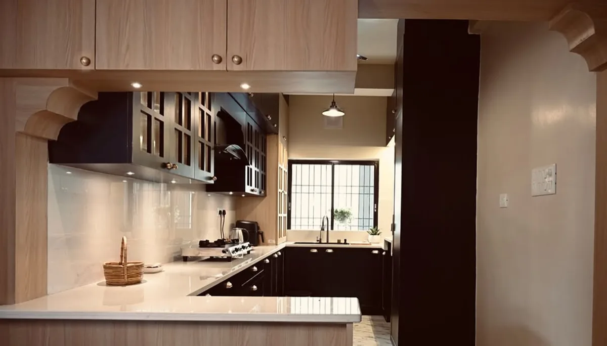
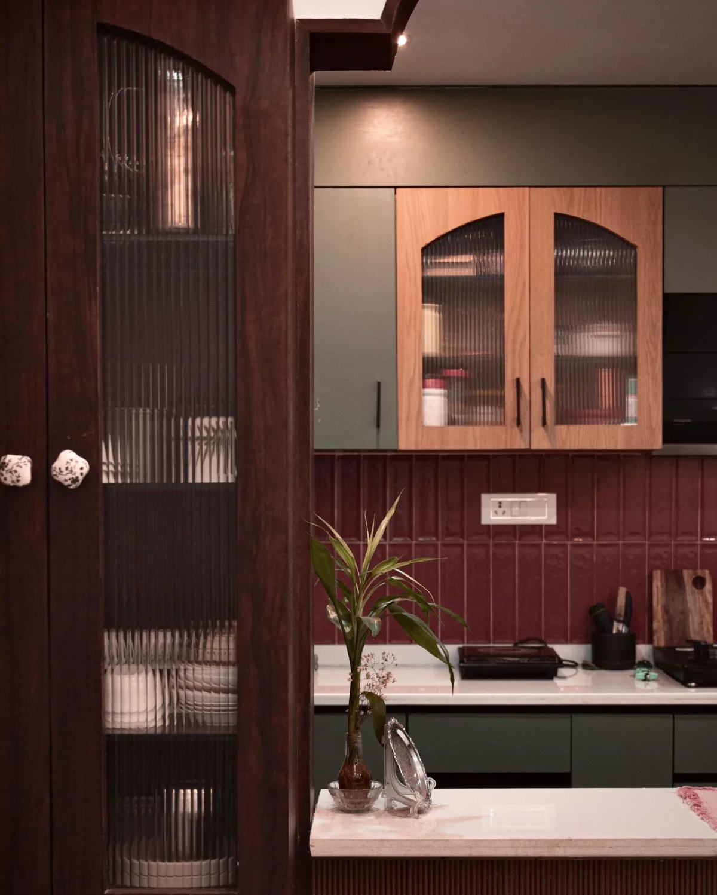
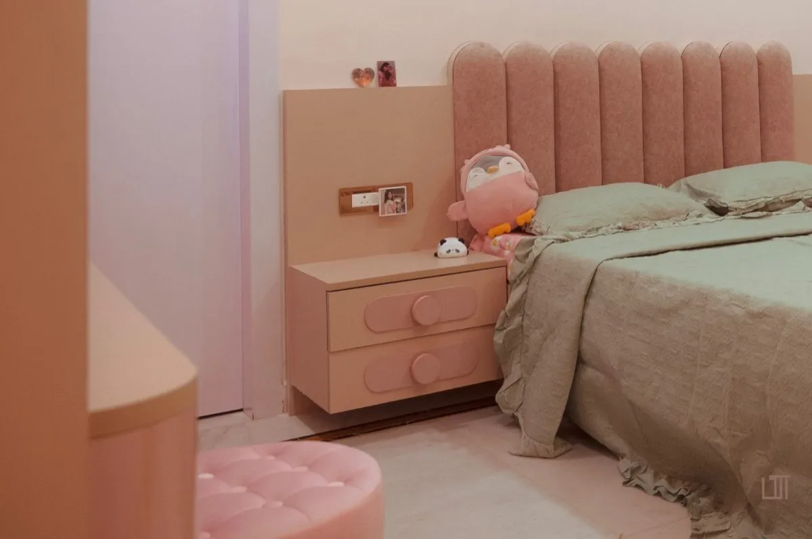
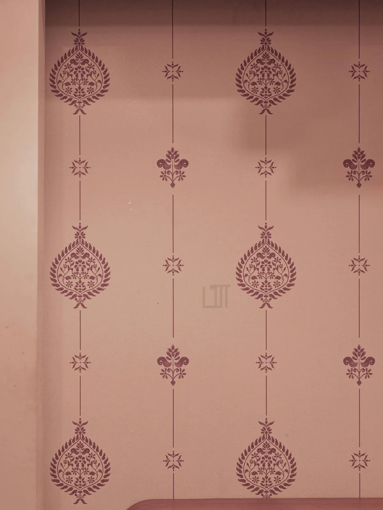
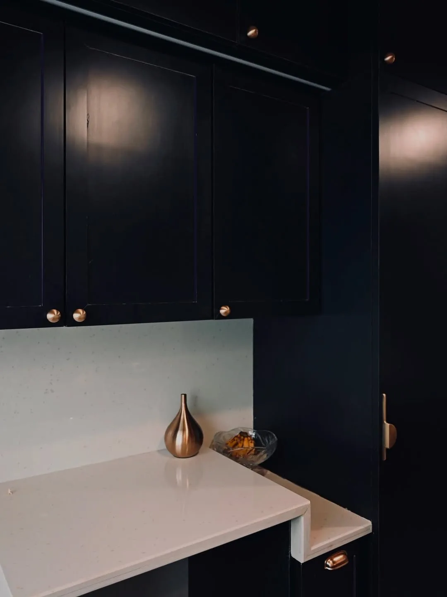

Studio Artitecting
Architecture Designer
Every space has a story.
Studio Artitecting doesn’t just design interiors—it creates spaces that shape everyday life. Our content focused on translating thoughtful design into visual stories, highlighting the details, materials, and moments that make every project feel personal.
Rather than simply showcasing finished interiors, we documented the atmosphere within them. Natural light, textures, and lived-in moments came together to create content that felt warm, timeless, and inviting.
Campaign Reels
Services
Impact
Brand
Strategy
8.2M +Views Generated
Creative
Direction
240%Growth In Reach
Content
Production
3.1M+Organic Impressions
Short-
Form Video
180+Content Pieces






More than interiors.
Stories of thoughtful design,
captured with purpose.